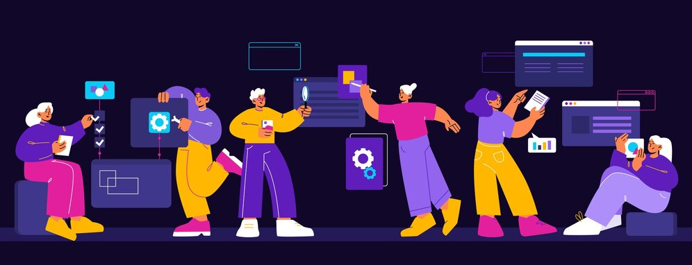

Onde pessoas e tecnologias entram em sintonia
A Jornada Dev é um curso completo e imersivo, que te leva do zero ao nível profissional em desenvolvimento de software, com foco nas tecnologias mais requisitadas do mercado.
Juntos pela revolução digital

- Dominar as principais linguagens de programação
- Aprender os frameworks mais utilizados
- Desenvolver suas habilidades em bancos de dados
- Criar projetos completos e profissionais
Na Jornada Dev você vai:
Missão
Democratizar o acesso ao ensino de qualidade em desenvolvimento de software, formando profissionais completos e preparados para os desafios do mercado de trabalho.
Visão
Ser a referência em educação para desenvolvedores, transformando vidas através da tecnologia.
Valores
Buscamos a excelência em tudo que fazemos, desde a qualidade do nosso conteúdo até o atendimento aos nossos alunos.Estamos sempre buscando novas formas de ensinar e aprender, para que nossos alunos estejam sempre atualizados com as últimas tecnologias.